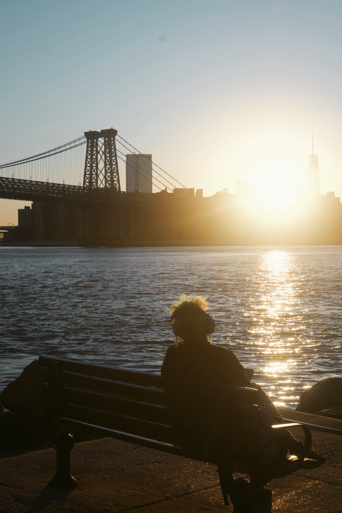
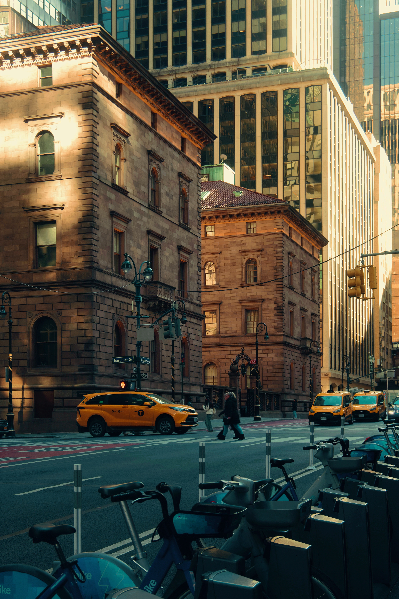

- SUBWAY ROAR — UNION SQUARE
- CAFÉ CONVERSATIONS — WEST VILLAGE
- RIVERSIDE BREEZE — WILLIAMSBURG
- MORNING MARKET — CHINATOWN
- CHERRY BLOSSOMS — CENTRAL PARK
- TEST LAYOUT

WILLIAMSBURG WATER / SUNSET
low bridge hum • wind in headphones

PIER / SOUTH STREET SEAPORT
metal lines vibrating in the dark

MIDTOWN / 5PM
horns, brakes, heat in the air

WEST VILLAGE / WINDOW TALK
glass clink • soft voices • street idle